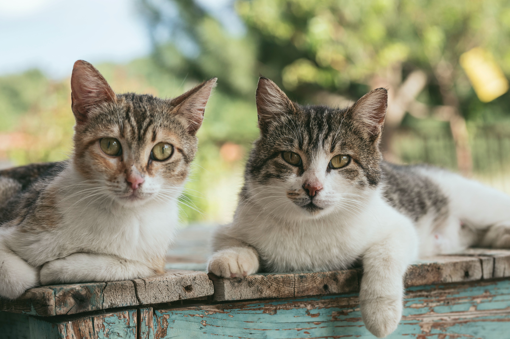

Cat Species
How many species of cats are there?
There are over 30 different species of Cats, and each are facinating by themselves.
The big cats in this family, like the lion, tiger, jaguar and leopard, can roar, but they can't purr. The small cats in this family, along with the pumas and the cheetah, can purr, but they can't roar! Most species in this order are solitary and hunt at night.
Some of the different species of cat's are the Tabby Cat, Black Cat, Jungle Cat, Cheetah, Tiger, African Lion and so many more.
